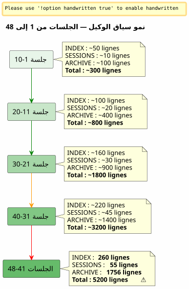

Sliding Window و Vague Froide : عندما ينفجر سياق الوكيل ويجب أرشفته دون فقدان
Publié le 26 April 2026
ملخص
بعد 48 جلسة على مشروع واحد وأكثر من 150 إجماليًا، بدأ نظام الحوكمة Eager/Lazy الذي بنّيتُه بعناية في الاختناق. كانت ملفات الوكيل، المفترض أن تكون خفيفة، تزن 5200 سطرًا متراكمة. كان السياق الذاتي التحميل يرتفع بسرعة أكبر من قدرتي على التحكم فيه. يشرح هذا المقال كيف صممتُ آلية احتياطية — بين نافذة انزلاقية وموجة باردة متطابقة — للحفاظ على سياق نشط خفيف دون فقدان أي شيء أبدًا.
الإشارة: 5200 أسطر
أنا في منتصف الجلسة 048 على`magic-stick`, مشروعي لبناء ISO لينكس لايف. أوبن كود يراقبني. كما هو الحال دائمًا، فقد حمّل تلقائيًا ملفاتي Eager في بداية الجلسة —AGENT.adoc, PROMPT_REPRISE.adoc, .agents/INDEX.adoc. لا شيء غير طبيعي.
لكن هناك شيء غير صحيح. الإجابات أصبحت أبطأ. الاستدلال أصبح أكثر تشتتًا. الوكيل ينسى تفاصيل كان يراها أمام عينيه قبل رسالتين.
أفتحterminal وأكتب :
wc -l .agents/INDEX.adoc .agents/SESSIONS_HISTORY.adoc \
.agents/archives/COMPLETED_TASKS_ARCHIVE_2026-04.adoc260 سطرًا لـ INDEX. 55 سطرًا لـ SESSIONS_HISTORY.1756 ل COMPLETED_TASKS_ARCHIVE.
الملف`sessions/`يضيف ما يقارب 3200 سطرًا. المجموع :5200 سطرًاسياقات يتم تحميلها، بأي طريقة، في الدماغ المؤقت للوكيل
الاستراتيجية الجشعة/الكسل التي نظّرتها في المقال السابق تعمل — لكن لها عيبًا خلقيًا لم أتوقعه: لالا آلية للشيخوخة. كل جلسة تضيف سطرًا إلى INDEX، فقرة إلى COMPLETED_TASKS، ملف في sessions/. لا شيء يخرج أبدًا. السياق هو كرة ثلج تتزايد مع كل جلسة جديدة.

ليس هذا خللًا، بل هو نتيجة مباشرة لإجراء إنهاء الجلسة الذي يُحَصّـل بدقة كل تفصيل. النظام ضحية نجاحه الخاص.
التشخيص : التكرار الثلاثي
أنا أطلب من الوكيل أن يشخص المشكلة. رده فوري وجراحي.
ملف |
أسطر |
الدور |
مشكلة |
|
260+ |
حريص (مشحّن ذاتيًا) |
جدول جميع الجلسات منذ 001 —+1 سطر لكل جلسة |
|
55 |
متحمس |
جدول ملخص —تكرار مع INDEX |
|
1756 |
EAGER (ضمني) |
تفاصيل كاملة لجميع جلسات أبريل |
|
~5200 total |
LAZY (مزعوم) |
أرشيفات فردية، لكنغير مستعملاتلأن كل شيء موجود بالفعل في COMPLETED_TASKS |
الوكيل يحدد أربع أسباب جذرية:
-
COMPLETED_TASKS_ARCHIVE يستوعب كل شيء— بدلاً من الإشارة إلى الأرشيف`.sessions/`, هو ينسخ كل جلسة بالكامل.
-
INDEX.adoc يعمل كسجل كامل— يحتوي جدول 'Sessions Récentes' على أكثر من 30 إدخال.
-
SESSIONS_HISTORY.adoc مكرر— نفس المعلومات مثل INDEX، لكن تنسيق مختلف.
-
لا تُحترم قاعدة LAZY— COMPLETED_TASKS هي متحمسة بشكل ضمني لأنها تحتوي على كل شيء.
اقتراحه جذري: تحديد INDEX بـ 10 جلسات، إفراغ COMPLETED_TASKS، نقل SESSIONS_HISTORY إلى LAZY خالص. الفائدة الفورية :~1900 خطوط مُوفّرة.
إنه نظيف، فعال، منطقي. لكن لدي مشكلة مع هذا النهج.
لماذا رفضت الحل الواضح
حل الوكيل هو ذلك الخاص بالمهندس الذي يُحسّن ذاكرة تخزين مؤقت. تقصير. اقتطاع. حذف التكرارات.
لكن هذه "التكرارات" ليست كذلك. كل ملف حوكمة يلتقطزاوية مختلفةعلى نفس الواقع :
-
فهرس= عرض ماكرو, لوحة القيادة التنفيذية
-
تاريخ الجلسات= جدول زمني خطي، مسجَّلة
-
COMPLETED_TASKS_ARCHIVE= السرد التفصيلي مع المقاييس
-
sessions/*.adoc = ملفات فردية، سياق كامل
هذا ليس تكرارًا غبيًا. إنه منمنظور متعدد ومنظم. هذا exactamente ما نحتاجه لتقطير — حتى يتمكن لاحقًا إنسان (أو LLM مستقبل مدرب بشكل أفضل) من تقاطع الزوايا واستخراج الأنماط.
تخيل عالم بيانات يقول لك: «Supprimons 3 colonnes sur 6, elles sont corrélées.» فماذا تجيبه؟ أن الارتباط ليس redundancy عندما يلتقط كل عمود بعدًا مختلفًا من الظاهرة نفسها؛ إنها بالضبط هذه الغنى البُعْدي الذي يجعل مجموعة البيانات قابلة للاستغلال.
هذا هو حدسي. وأنا أدافع عنه ضد البرود العقلي للوكيل.
_ لا أرى حقيبة شاملة صامتة في فكرتي. لا نحشو كل شيء، بل ننقل النتيجة المنظمة لإجراء انتهاء الجلسة — كل ملف مع زاويته، وتكراراته التي هي في الواقع إثراء. هذا المواد متعددة الأبعاد ستكون أفضل للتقطير. _
الوكيل يتحمل الضربة. ويصحح نفسه.
الاقتراح: موجة باردة متطابقة
ثم يقترح الوكيل آلية أكثر دقة تحترم شعوري بشأن مجموعة بيانات غنية وفي الوقت نفسه تحل المشكلة التقنية للسياق الذي يتفجر.
المبدأ بسيط ويستوحي مباشرة من النمطساخن/دافئ/بارد تخزينمُطبق على إدارة الأرشيف :
-
حار (مُتَحَمِّس)= العشر جلسات الأخيرة في INDEX, PROMPT_REPRISE للجلسة N+1, الملفان الأخيران للجلسة
-
دافئ (LAZY)= SESSIONS_HISTORY حديث, SCRIPT_VERIFICATION, كافة الوثائق المرجعية
-
بارد (النسخ الاحتياطي/)= كل شيء آخر، تم نقلهسليم, بدون تحويل, بدون إعادة الفهرسة
----
----
.agents/
├── INDEX.adoc → Sessions N-9 à N (10 dernières)
├── SESSIONS_HISTORY.adoc → Sessions N-9 à N
├── SCRIPT_VERIFICATION.adoc → Dernière vérif (pas d'historique)
├── PROMPT_REPRISE.adoc → Session N+1 uniquement
├── sessions/ → Sessions N-1 à N uniquement
└── backup/
└── Y2026-sessions-001-039/ ← Vague froide, COPIE INTÉGRALE
├── INDEX.adoc → Sessions 001 à 039 (complet)
├── SESSIONS_HISTORY.adoc → Sessions 001 à 039 (complet)
├── COMPLETED_TASKS_ARCHIVE.adoc → Sessions 001 à 039 (complet)
└── sessions/ → 001.adoc, 002.adoc...
----
مفتاح الآلية :**النسخ الاحتياطي ليس فهرسًا مركزيًا، هو نسخة متطابقة من الموجة الماضية**. عندما يتجاوزنا الأفق لـ 10 جلسات نشطة، لا نحذف شيئًا. لا نقوم بإعادة فهرسة أي شيء. لا ندمج شيئًا. نأخذ حزمة ملفات الوكلاء كما كانت في الجلسة N-10، وننقلها إلى`backup/`.
الملفات النشطة، من ناحيتها، مقطوعة :
* المؤشر: فقط آخر 10 أسطر (نافذة منزلقة)
* SESSIONS_HISTORY : نفسه
* COMPLETED_TASKS_ARCHIVE : ملف جديد للفترة الحالية
* الجلسات/ : فقط آخر جلستين
[plantuml, format=svg, id=diag-hot-warm-cold, alt="Architecture Hot/Warm/Cold du contexte agent — EAGER/LAZY/backup"]
----
@startuml
skinparam backgroundColor #FEFEFE
skinparam defaultTextAlignment center
skinparam wrapWidth 200
title هندسة ساخن / دافئ / بارد وكيل السياق
package "HOT (EAGER)
تم الشحن تلقائيًا
~300 سطر" as HOT #FFCDD2 {
file "INDEX.adoc
(10 جلسات)" as IDX_HOT
file "PROMPT_REPRISE
(جلسة N+1)" as PRO_HOT
file "AGENT.adoc
(قواعد مطلقة)" as AG_HOT
}
package "WARM (LAZY)
تم التحميل عند الطلب
~500 سطر" as WARM #FFF9C4 {
file "SESSIONS_HISTORY\n(الأخيرة 10)" as HIS_WARM
file "SCRIPT_VERIFICATION
(الأخيرة)" as VER_WARM
file "PROCEDURES.adoc\n(قوالب)" as PRO_WARM
file "*_مرجع.adoc
(وثيقة فنية)" as REF_WARM
}
package "COLD (backup/)
لم يُشحّن أبدًا
القراءة البشرية فقط" as COLD #BBDEFB {
folder "Y2026-001-039/" as WAVE {
file "الفهرس (مكتمل)" as IDX_COLD
file "SESSIONS_HISTORY\n(مكتمل)" as HIS_COLD
file "COMPLETED_TASKS\n(مكتمل)" as ARCH_COLD
folder "جلسات/ (001-039)" as SESS_COLD
}
folder "Y2026-040-???
(المستقبل)" as FUTURE
}
HOT --> WARM : "الوكيل يرتفع
إذا لزم الأمر"
WARM --> COLD : "أبدًا تلقائيًا
الإنسان يذهب هناك بمفرده"
note bottom of COLD
Règle : COPIE INTÉGRALE
Pas de transformation
Pas de réindexation
Read-only après archivage
end note
@enduml
----
المكسب الفوري هائل: سياق EAGER يمر من**~5200 سطر إلى ~300 سطر**. قسمة على 17. دون فقدان أي سطر من البيانات التاريخية.
== لماذا هذا ليس حاوية شاملة
الوكيل، في تكراره الأول، كان يخشى أن`backup/`مجلد يُلقى فيه ملفات لن تُعاد قراءتها أبدًا. هذا خوفٌ مشروع. لكنها تقوم على لبس.
المجموعة المتنوعة هي عندما نرمي الملفات**بدون بنية، بدون اتفاقية، بدون منطق للتجميع**. هنا، يتم تنظيم النسخ الاحتياطي حسب الفترة (Y2026-001-039)، وكل مجلد نسخ احتياطي يحتوي**نفس الهيكل**أن الملف`.agents/`نشط : INDEX, SESSIONS_HISTORY, COMPLETED_TASKS_ARCHIVE, sessions/.
ليس حاوية شاملة. إنه**لقطة ذات طابع زمني**.يمكن حتى القول إن هذا آلية إصدار مبسطة — باستثناء أنه لا يُصدر الملفات بشكل فردي، بل الحزمة الكاملة للحكم في لحظة T.
عندما تريد استرداد معلومات قديمة، لا تحتاج إلى فهرس مركزي. لديك خياران :
1. **grep` المستهدف** : `grep -r "zsh" backup/Y2026-001-039/`— وأنت تجد كل ما يذكر zsh خلال الفترة، بغض النظر عن الزاوية (INDEX, SESSIONS_HISTORY, أرشيف الجلسة).
2. **إعادة دمج يدويّة**تقوم بنسخ مجلد الاحتياطي مؤقتًا إلى السياق النشط، ثم تطلب من الوكيل تحليل هذه الفترة المحددة.
المؤشر مفهوماً ضمنيًا. إنه موجود في بنية الملفات نفسها — كل ملف هو بالفعل فهرس من زاويته الخاصة.
== ميتافور الأرفف
لجعل الآلية بديهية، تصوّرتها على أنها ثلاث طبقات :
* **رف 1 (EAGER)**— خطة العمل. ما أحتاجه *الآن*. الفهرس الحديث، PROMPT_REPRISE، القواعد المطلقة. خفيف، فوري، حاسم.
* **رف 2 (LAZY)**— مكتبة الاستشارة. ما يمكنني استرجاعه عند الطلب. مراجع تقنية، تاريخ حديث، إجراءات. أضخم، لكنه غير محمل في الذاكرة.
* **القبو (backup/)**— الأرشيفات الباردة. كل ما هو ماضٍ لكنني لا أريد التخلص منه. الوكيل لا يدخلها أبدًا. الإنسان ينزل إليه عندما يرغب في التقطير.
الوكيل اقترح في البداية الرف الرابع — واحد`index-backup.adoc`الذي سيكون LAZY ويتضمن جدول محتويات للنسخة الاحتياطية بأكملها. رفضت. سيكون ذلك تكرارًا إضافيًا في نظام يعاني بالفعل من نمو خطي. بنية الملفات المؤرشفة هي بالفعل فهرس.
== المستشعر ذو الزنادين
كان المفهوم صلبًا، لكن بقيت نقطة عمياء :**متى بالضبط يجب تشغيل الدوران؟**المقالة الأولية حددته كسؤال مفتوح. بعد يومين، تم ترميز الإجابة في ملفات حوكمة ستة مشاريع: مستشعر ذو محفّزين.
=== المُشغل التلقائي — `N % 10 == 0
المُحفّز الأول رياضي. عندما يكون رقم الجلسة مضاعفًا لـ 10 — الجلسة 10، 20، 30، 40 — يتم تنفيذ تدوير النسخ الاحتياطي تلقائيًا داخل إجراء انتهاء الجلسة، مباشرةً بعد الخطوة 6.
لماذا 10؟ إنه توازن بين قوتين متعارضتين: نافذة قصيرة جدًا (5 جلسات) تفقد السياق الضروري للاستمرارية؛ نافذة طويلة جدًا (20 جلسة) لا تحل مشكلة تضخم السياق. عشر جلسات، بوتيرة جلسة إلى جلستين يوميًا، تغطي تقريبًا أسبوع عمل — كافٍ لكي يتذكر الوكيل القرارات الأخيرة، وغير كافٍ ليؤدي إلى انفجار السياق.
=== المُحفّز بالحد — 500 سطرًا EAGER
المشغل الثاني ديناميكي. بغض النظر عن رقم الجلسة، إذا تجاوزت الملفات EAGER المتراكمة**500 سطر**, يبدأ الدوران.
هذا الحد يقي من السيناريو حيث تكون الجلسات استثنائية الإنتاجية — يتم كتابة الكثير من المحتوى في عدد قليل من الجلسات. جلسة تنتج 120 سطرًا من المحتوى التحريري تجعل COMPLETED_TASKS_ARCHIVE يزداد أسرع بكثير من جلسة تصحيح تصلح سطرين. حدّ 500 سطرًا، المقاس عبر`wc -l .agents/INDEX.adoc .agents/archives/COMPLETED_TASKS_ARCHIVE_*.adoc PROMPT_REPRISE.adoc`, يلتقط هذا الاختلال
=== المنبه اليدوي — "rotation backup
أخيرًا، يبقى الإنسان هو المتحكم. الكلمات المفتاحية`rotation backup`, `backup rotation` ou `lance la rotation backup`يطلِقون الإجراء عند الطلب، بشكل مستقل عن انتهاء الجلسة. مفيد عندما تشعر أن السياق يصبح ثقيلًا ولكنك لم تصل بعد إلى مضاعف 10، أو عندما تريد أرشفة مرحلة عمل قبل بدء مرحلة جديدة.
[plantuml, format=svg, id=diag-capteur-trigger, alt="Les trois déclencheurs du capteur de rotation backup — automatique, seuil, manuel"]
----
@startuml
skinparam backgroundColor #FEFEFE
skinparam defaultTextAlignment center
skinparam wrapWidth 200
title مستشعر دوران احتياطي — المحفزات الثلاثة
start
:Procédure de fin de session;
note right: Mots-clés "نهاية الجلسة"\nou "نتوقف هنا"
:Étapes 1 à 6\n(archivage standard);
note right
1. Archive sessions/N.adoc
2. MAJ PROMPT_REPRISE
3. MAJ SESSIONS_HISTORY
4. MAJ INDEX.adoc
5. MAJ TEST_COVERAGE
6. MAJ COMPLETED_TASKS
end note
if (N % 10 == 0\nOU\nEAGER cumulé > 500 lignes ?) then (oui)
:⚙️ Rotation Backup\n(étape 7);
note right
1. Créer backup/Y20XX-sessions-X-Y/
2. Copier intégrale INDEX + HISTORY
+ COMPLETED_TASKS + sessions/
3. Tronquer actifs à 10 sessions
4. Ajouter _Localisation active_
end note
else (non)
:Pas de rotation;
endif
:Checklist [✅] x 7\n(si applicable);
stop
@enduml
----
يوضح هذا الرسم البياني الإدخال الدقيق للمستشعر في إجراء نهاية الجلسة. الخطوة 7 اختيارية — يتم تنفيذها فقط إذا كانت إحدى الحالتين صحيحتين — لكنها تتم بشكل منهجي *مُتحقَّق*. قائمة التحقق النهائية تشمل`[✅] 7. Backup roté (si applicable)`.
=== الحلقة المغلقة
هذا المستشعر يغلق الحلقة التي فتحها المقال السابق. الإدارة Eager/Lazy قد حلت مشكلة ذاكرة الوكيل بين جلستين. الآلية Hot/Warm/Cold حلت مشكلة الذاكرة التي تزداد. المستشعر ذو المحرّكين يحل مشكلة *الوقت* — يزيح عن الإنسان العبء الذهني لمراقبة حجم السياق.
[plantuml, format=svg, id=diag-boucle-fermee, alt="Les trois couches de la gouvernance agent — Eager/Lazy, Hot/Warm/Cold, Capteur"]
----
@startuml
skinparam backgroundColor #FEFEFE
skinparam defaultTextAlignment center
title الطبقات الثلاث لحوكمة الوكيل
left to right direction
package "الطبقة 1 — ذاكرة
(المادة 0108)" as C1 #E8F5E9 {
rectangle "**مستعد**
لوحة التحكم
محمل تلقائيًا" as EAG
rectangle "**LAZY**
دليل المالك
يتم الشحن عند الطلب" as LAZ
EAG -[hidden]right-> LAZ
}
package "طبقة 2 — الشيخوخة
(المادة 0110)" as C2 #FFF9C4 {
rectangle "**HOT**
10 جلسات نشطة
حوالي 300 سطر" as HOT
rectangle "**WARM**
المراجع
الإجراءات" as WRM
rectangle "**COLD**
backup/
موجة باردة" as CLD
HOT -[hidden]right-> WRM
WRM -[hidden]right-> CLD
}
package "الطبقة 3 — المشغّل\n(اليوم)" as C3 #BBDEFB {
rectangle "**تلقائي**\nN % 10 == 0" as AUTO
rectangle "حد
> 500 أسطر" as SEUIL
rectangle "**Manuel**
النسخ الاحتياطي بالدوران" as MAN
AUTO -[hidden]right-> SEUIL
SEUIL -[hidden]right-> MAN
}
C1 --> C2 : "الذاكرة تنمو\n→ يلزم وجود آلية للشيخوخة"
C2 --> C3 : "الشيخوخة
→ يجب أن يكون هناك مشغل
لتنفيذه"
note bottom of C3
✅ Déployé sur 6 projets
magic-stick · bakery-gradle
plantuml-gradle · cheroliv.com
jhipster-gradle-plugins
quizz-benchmark-gradle
end note
@enduml
----
الطبقات الثلاث تُرتبّ منطقيًا. الطبقة الأولى تمنح الذاكرة للوكيل. الطبقة الثانية تمنع هذه الذاكرة من إخنق الوكيل. الطبقة الثالثة تقوم بأتمتة صيانة هذه الذاكرة بحيث لا يحتاج الإنسان إلى التفكير فيها.
=== الهجرة الفعالة على cheroliv.com
لم يظل الميكانيزم نظريًا. على`cheroliv.com`, تم تنفيذ أول دوران للنسخ الاحتياطي في 29 أبريل 2026 — تم نقل الجلسات من -6 إلى 2 إلى`.agents/backup/Y2026-sessions-neg6-a-002/`:
|===
|ملف |قبل الدوران |بعد الدوران |كسب |`.agents/INDEX.adoc` |19 جلسة مدرجة |10 جلسات (3-12) |-9 مدخلات |`.agents/SESSIONS_HISTORY.adoc` |18 جلسة |10 جلسات |-8 مدخلات |`COMPLETED_TASKS_ARCHIVE` |161 سطرًا (الجلسات 1-12) |135 أسطر (الجلسات 3-12) |-26 أسطر |`sessions/` |20 ملفات |10 ملفات |-10 ملفات |**نسخة احتياطية/** |غير موجود |موجة باردة (10 جلسات أرشيفية) |+1 حزمة باردة
|===
الزيادة في عدد الأسطر كانت متواضعة — المشروع شاب، 12 جلسات — لكن المهم هو أن الـ**الالية موجودة**. سيتم تشغيل الدوران التلقائي التالي في الجلسة 20، أو في وقت سابق إذا تم الوصول إلى 500 سطر EAGER.
== الدرس الوكيل البشري
هذه الجلسة 048 علمتني شيئًا جوهريًا حول التعاون مع وكيل ذكاء اصطناعي.
الوكيل لديه تحيز طبيعي: يسعى إلى**تحسين**, à **تبسيط**, à **إزالة التكرارات**. هذا هو التحيز لنظام تم تدريبه لإنتاج إجابات نظيفة وموجزة. عند مواجهة مجموعة بيانات غنية ومتعددة الأبعاد، يكون أول رد فعل له هو تقليلها إلى أبسط تعبير.
الإنسان، من جهته، لديه حدس مختلف: إنه يشعر أن التكرار المنظم هو**ميزة**، ليس عيبًا. إن تنوع الزوايا حول نفس الواقع هو بالضبط ما سيسمح لاحقًا بتقطير عالي الجودة.
ليس الأمر أن الوكيل مخطئ. بل إن "الأمثل" الخاص به ليس هو "الأمثل" الخاص بي. الوكيل يحسّن لـ**الحاضر**— السياق الفوري، الجواب السريع على السؤال المطروح. الإنسان يحسّن لل**المستقبل**— القدرة على البحث، والتمازج، والتقطير خلال ثلاثة أشهر أو ثلاث سنوات.
____ ما أريده هو المواد الخام. أفكارك، ترددك، إجاباتك على أسئلتي. ليس تركيبك. التركيب، أنا أعرف كيف أقوم به أفضل منك. أريد المادة الخام. ____
هذه الجملة التي قلتها له في نهاية الجلسة تلخص كل شيء. الوكيل هو أداة الإنتاج. الإنسان هو أداة التقطير. الحوكمة ليست مُصمَّـة بحيث يفهم الوكيل كل شيء بمفرده — بل هي مُصمَّـة ليتمكّن الإنسان لاحقًا من العمل على المادة المنتجة.
الموجة الباردة المتطابقة هي الترجمة المعمارية لهذه الفلسفة: لا نلقي بشيء، لا ندمج شيئًا، لا نعيد فهرسة أي شيء. نحن ننقل الحزمة سليمة. سيأتي التقطير لاحقًا، يدويًا، بواسطة الإنسان.
== التتابع المنطقي للمقالة السابقة
إذا قرأتlink:/blog/2026/0108_gouvernance_agent_opencode_eager_lazy_post.html[المقالة حول استراتيجية Eager/Lazy], ستدرك التقدم الطبيعي :
1. **المادة 0108**حوكمة Eager/Lazy : *comment* تنظيم سياق الوكيل على مستويين من التوفر
2. **هذا المقال 0110**— آلية النسخ الاحتياطي : *comment* جعل هذا السياق يشيخ دون فقده عندما يصبح كبيرًا جدًا
أجاب المقال الأول على السؤال: « لا يتذكر الوكيل شيئًا بين جلستين، كيف نعطيه ذاكرة؟
هذا يجيب عن السؤال الذي ينشأ حتمًا من الأول : «الذاكرة تزداد في كل جلسة، كيف نمنعها من اختناق الوكيل دون مسحها؟
الجواب يقتصر على نمط:**حار/دافئ/بارد**, تم تطبيقه على ملفات الحوكمة. ومبدأ واحد :**لا تفقد شيئًا أبدًا، أعد توطين كل شيء دائمًا**.
== روابط
* المقال السابق :link:/blog/2026/0108_gouvernance_agent_opencode_eager_lazy_post.html[حكم وكيل ذكاء اصطناعي باستخدام AsciiDoc]
* موقعي : https://cheroliv.com
* المشروع`magic-stick`: https://github.com/cheroliv/magic-stick
---
نظام حوكمة جيد لا يحذف البيانات أبداً. إنه يخزنها.
----